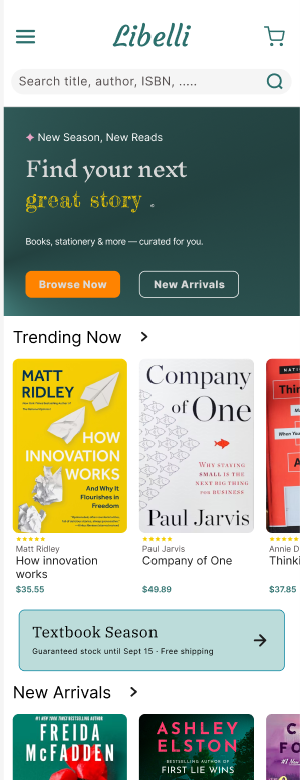

Drop a Libelli
screenshot here
screenshot here
01
Libelli
Mobile bookstore app · UI/UX design
16 high-fidelity mobile screens covering the full e-commerce journey — browse, search, cart, checkout, order tracking — grounded in user personas and a complete information-architecture sitemap. Interactive prototype with realistic device frames, sticky CTAs, and a multi-filter bottom-sheet.
View prototype in Figma →